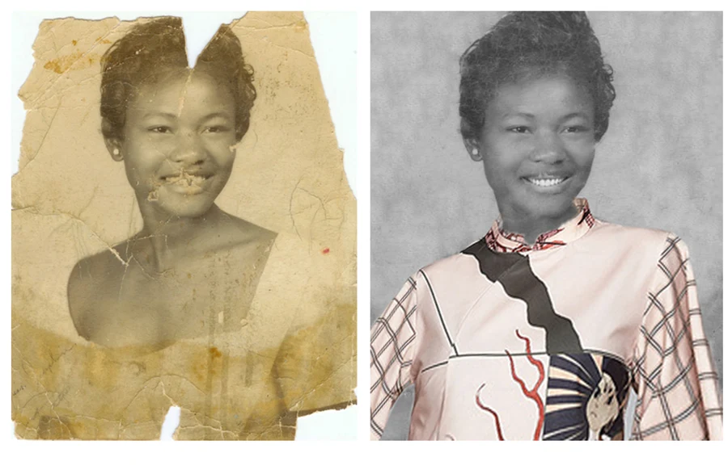

GRAPHIC DESIGN / 12
Giving a photograph a second life
A side-by-side restoration study that makes the change easy to see.
Image restoration · RetouchingTHE PROJECT
Photo restoration
This before-and-after image shows a damaged portrait alongside its restored version. The presentation makes it possible to compare the original surface damage, tonal changes, and the treatment of the subject.
MY DESIGN APPROACH
The restoration focuses on bringing back a clearer image while keeping the character of the portrait. A simple side-by-side layout lets the image itself communicate the work.
DESIGN OBJECTIVE
Present the repair of a damaged portrait with a direct before-and-after comparison.
Objective interpreted from the artwork; original customer brief not supplied.
COLOUR & CONTRAST
Tonal balance carries the work: natural-looking skin values and controlled highlights help the face separate from its background.
